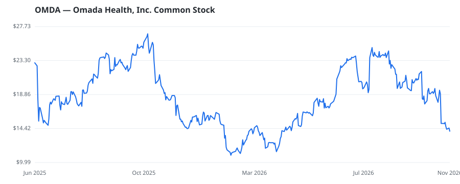

bullish · bearish · n/a — dots: price>SMA10 · SMA10>SMA50 · SMA50>SMA200 · up>down volume (20d)
Health Care Equipment & Services · small cap

Omada Health Inc empowers individuals to make lasting health changes through personalized, virtual care between doctor's visits. The integrated platform of the company supports members with cardiometabolic conditions like prediabetes, diabetes, hypertension, musculoskeletal issues, and behavioral health needs. The company's specialized care tracks also assist members using GLP-1 medications. The company delivers measurable health outcomes and value for employers, health plans, health systems, and pharmacy benefit managers. SERVICES-HEALTH SERVICES · website
| Revenue | $260.2M | Net income | $-12.8M |
|---|---|---|---|
| Operating income | $-12.0M | Diluted EPS | $-0.35 |
| Assets | $305.4M | Equity | $229.7M |
🛒 Newly buying: Estuary Capital Management LP (+35%, 3.2% of book)
| Fund | Fund alpha vs SPY | Position | % of book |
|---|---|---|---|
| Estuary Capital Management LP | +35% | $28M | 3.2% |
Hedge data: SEC EDGAR 13F · ranked funds beat SPY in >50% of their quarters · fund alpha = mirror-portfolio return minus SPY.